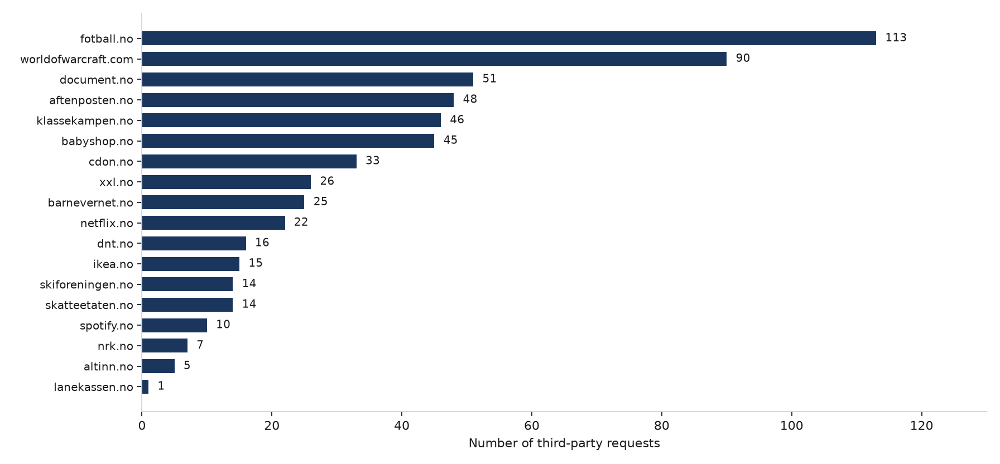
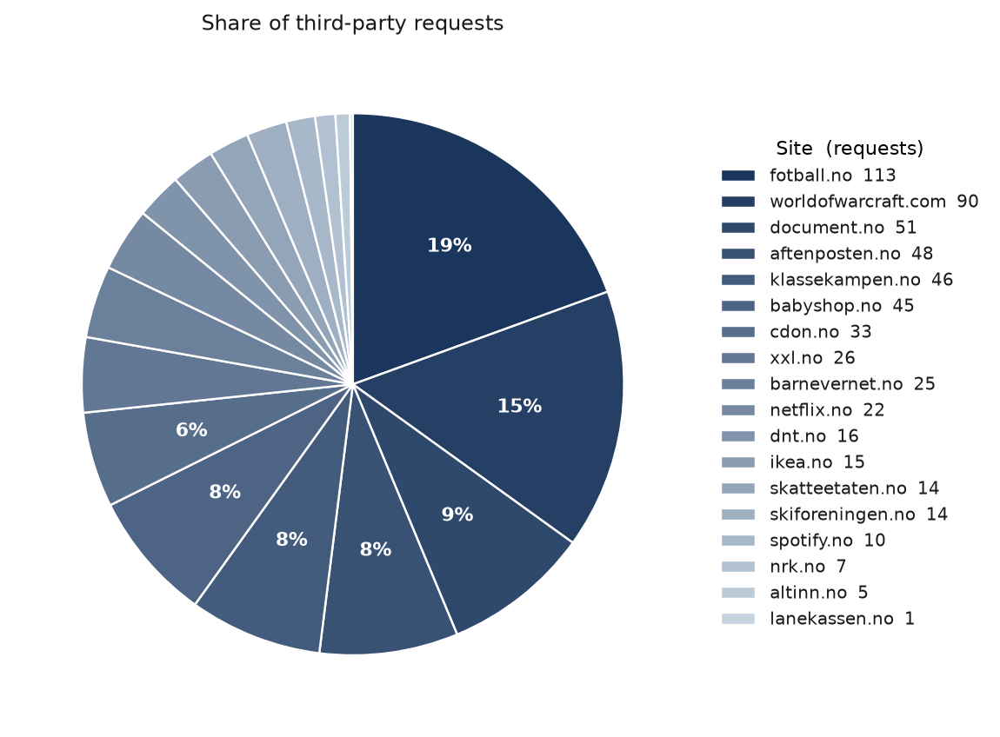
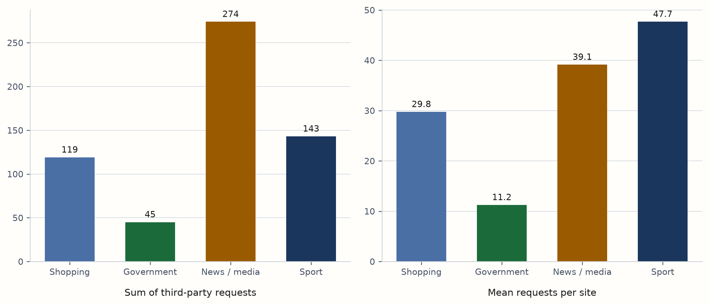
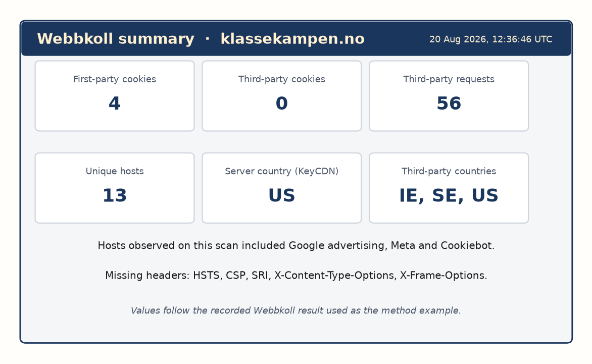
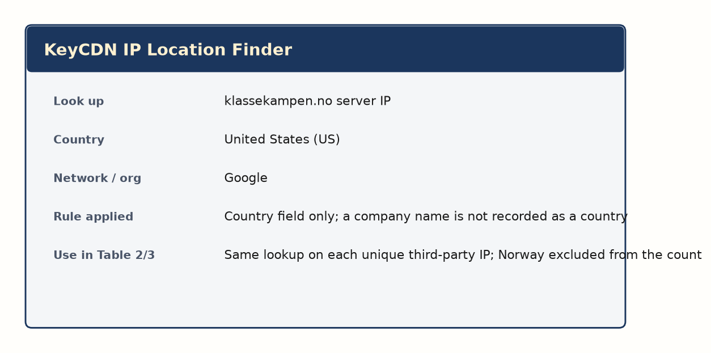

ACIT4280 Privacy by Design
Group Assignment 1A
Humna Akhtar · Mithun Chandra Debnath
Karina Sætersdal Nilssen · Sumit Prasad Sah





| Service | Purpose | ICO | Match |
|---|---|---|---|
| skatteetaten.no | Tax / folkeregister | Legal obligation + public task | Yes |
| skatteetaten.no | Optional cookies | Consent INCONCLUSIVE; none APPROPRIATE | Partial |
| netflix.no | Paid streaming | Contract | Yes |
| fotball.no | Name + club, 13+ | Legitimate interests | Yes |
| document.no | Google Signals | Consent INCONCLUSIVE; none APPROPRIATE | Partial |
| babyshop.no | Checkout / delivery | Contract | Yes |
ACIT4280 Privacy by Design · Group Assignment 1A